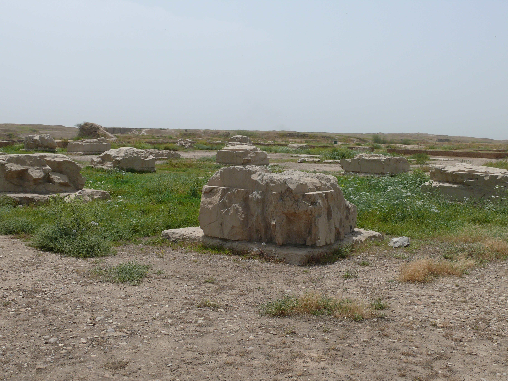

Palace of Darius I at Susa (Apadana)

- Find Name
- Palace of Darius I at Susa (Apadana)
- Description
- The royal palace complex of the Persian kings at Susa, biblical Shushan, on a 12-hectare terrace in the city the Bible calls Shushan the palace. Darius I built it as a winter capital, and its audience hall, the Apadana, was a hypostyle hall of 36 columns some 20 metres high, topped with bull capitals, standing on a terrace reached through a monumental gate — the King's Gate of Esther. Marcel and Jane Dieulafoy's excavations of 1884-1886 recovered the glazed-brick friezes of archers and the column capitals now in the Louvre, and Darius's own trilingual foundation inscription records the empire-wide origins of the palace's materials, from cedar of Lebanon to gold of Sardis. Later French work under Jean Perrot showed that the palace layout described in Esther — courtyards, gate, inner court before the throne — matches the excavated plan in its essentials.
- Historical Period
- Achaemenid Persian, late 6th century BC
- Evidence Class
- Direct
- Interpretations
- Scholars agree the excavated palace complex is biblical Shushan the palace, and Perrot's judgment — that Esther's detailed description of the palace interior is 'in excellent accord with archaeological reality' — is widely cited. The Frieze of Archers and the Xerxes Guardsman Relief are separate entries; this entry is for the palace complex and its Apadana as a whole. The precise spot of Esther's approach is not identified, and is not claimed.
- Alternative Names
- Shushan the Palace; Apadana of Darius
- Related Places
- Related Books
- Related Events
- Related People
- Scripture Illuminated
- Biblical Significance
- This is the palace of Esther and Nehemiah. Esther 1 opens in Shushan the palace, Nehemiah was cupbearer to Artaxerxes there (Nehemiah 1:1), and Daniel's vision in Daniel 8:2 is set at Shushan in the province of Elam. The palace gives those books a floor plan: a king's gate where Mordecai sat, courtyards where Esther risked her approach to the throne (Esther 5:1), and an audience hall where the empire's power was displayed. It is the seat of the empire that let the exiles return and rebuild.
- Artifact Date
- Built by Darius I, c. 521-486 BC; used by Xerxes and Artaxerxes I
- Current Location
- In situ, Shush, Iran (friezes, capitals, and inscriptions chiefly in the Louvre, Paris)
- Date Discovered
- 1884-1886 (Marcel and Jane Dieulafoy); continued by Jacques de Morgan, 1897 onwards
- Discovery Location
- Shush, Khuzestan Province, Iran
- Timeline Era
- Return and Second Temple
Awaiting Review Not yet checked against scholarly sources. Treat its claims as provisional until this entry is reviewed. About verification
Last reviewed: not yet reviewed